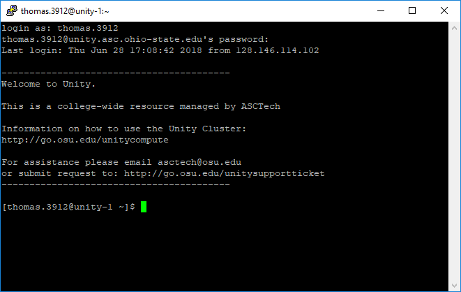

Common Linux / Unix Terminal Commands
Links: Commands; Advanced Commands; .bashrc; programs
Working on a linux server (e.g., the Unity cluster) typically involves interacting with a terminal. A terminal will look something like this

The dollar sign "$" just before the green cursor (in the screenshot above) is called the
PROMPT and it lets me know that Unity is ready for me to start typing commands. The output from those commands will appear on a new line WITHOUT a "$".
The terminal may seem quite unfriendly at first, but mastery of only a few commands will get you off running. These commands are
pwd -- print the path/location of the folder that you are currently inls -- print the contents of the current foldermkdir NAME -- make a new folder called NAME in the current locationcd PATH -- change to the new location specified by PATHrm FileName -- remove the file FileNamemv FileName NewPath -- move the file FileName to the location specified by NewPathexit -- closes the terminal (exits the shell)
A Little Background
Before we take a closer look at these commands, it will be useful to discuss the linux file system, along with
ABSOLUTE and
RELATIVE PATHS. The Unity cluster will serve as the working example.
Each folder and file can be found by referring to its
ABSOLUTE PATH, the list of its "parent" folders separated by a forward slash
"/".
- The oldest "ancestor", or the "root" of the family tree, is simply a single forward slash all by itself: "/" (i.e., no "parent" folders).
- Your personal folder (or directory) on the Unity cluster is in the "home" folder which, in turn, is in the root folder: "/home/name.#".
- A concrete example: the ABSOLUTE PATH to my personal folder is "/home/thomas.3912" ( quick point: on the Unity Cluster, each user gets 100 Gigbytes of space in their home folder).
You can also refer to files/folders using the
RELATIVE PATH, or the location from you current directory (as shown by the
pwd command.
[code lang="js"]your code here[/code]
[bash]$ ls [/bash]
Further Details about Terminal Commands
pwd
ls
mkdir
cd
rm
with great power comes responsibility
the directory version is
rmdir
mv
exit